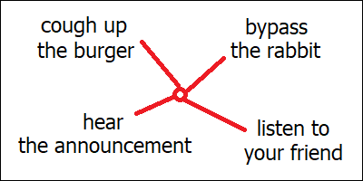

I similarly borrow this idea from “Thinking, Fast and Slow”, although it’s not limited to this particular book. Human reasoning can roughly be separated into two systems. First of them has properties described in the previous chapter: it’s fast, unconscious and inherently imprecise. The second system is remarkably different. It’s conscious and deliberate. Unlike intuition, it can actually finish unfamiliar tasks correctly, and it can verify intuitive “hunches” against objective reality of the world around. Conscious reasoning is also necessary for complex cognitive processes, like proving of mathematical theorems. The problem with this second system though is that it can only do one thing at a time. It is therefore inherently limited in its capacity, which is why they call it “slow thinking”.
Humans can do many different things at the same time. You can simultaneously drive a car, enjoy a song played by the radio and eat a burger, all while talking to a friend sitting nearby. However, you can only do all these four things at once provided that nothing interesting or unexpected ever happens with any of the first three of these activities. If you suddenly notice a rabbit jumping out of the bush at some distance ahead of you, or if an important announcement interrupts the radio broadcast, or if you happen to choke on your burger for whatever reason, you won’t be able to understand what your friend is saying anymore. This happens because the first three among these activities are automatic. Unlike the conversation with the friend, neither driving, listening to the music nor eating requires our conscious attention. And conscious attention (in humans at least) has this peculiar property that it can only be engaged into one single process at a time.
This automatic processing is what I’m calling “intuition” here. We intuitively know how to drive the car (although this intuition might be of poor quality if we haven’t had enough experience with driving yet), and we of course intuitively know how to chew the burger. Intuition is also responsible for detecting things which aren’t expected in a given situation. Without us even being aware, hidden areas inside our brain are constantly monitoring the road and verifying if everything looks familiar. Detection of the rabbit happens automatically, and our ability to detect such dangerous situations actually improves with experience. At the same time, other hidden areas within our brain are constantly monitoring the sound from the radio, and filter it for some keywords which we might have learned from our experience to be indicative of an important announcement being made.
Trying to understand what our friend is saying though, isn’t automatic. Our intuition can’t handle it. This process requires the engagement of this second subsystem, which we might call “conscious reasoning”. Whenever our intuition detects a dangerous or otherwise important situation which we know it won’t be able to handle by itself, we therefore have to switch our attention to this new situation, and let our conscious reasoning solve the problem. But at the same time, our attention will move away from whatever activity we have been doing before, and so we’ll lose our ability to consciously control this previous activity. Switching our attention in such ways, by the way, is what stage magicians do for a living.
If the radio announcement happens to be made at the same moment when the rabbit jumps out, you will have to prioritize. Most likely you’ll decide (automatically) that evading the collision with the rabbit is more important, and therefore won’t be able to hear the announcement. Whereas if you ever happen to choke on the burger at the exact moment when you realize that there’s a rabbit on the road, ether you or the rabbit will be in big trouble.

Conscious reasoning is involved in activities like complex arithmetic, understanding of human language, proving of mathematical theorems or comparing the prices of similar products in a department store. It doesn’t feel like magic, but I would probably still guess that, biologically, this process must be much more complicated than any of the processes which underlie the different types of our intuitions. Conscious reasoning is remarkably slower than intuition, which is why they call it “slow thinking”. What it does, apparently, is it unites the outputs from all the different independent “intuition modules” within our brain and compares their suggestions with each other. It can, in this way, verify imperfect intuitive predictions against objective reality, which is being analyzed and processed constantly by other dedicated intuitive modules. And being able to perform such a verification, this “slow thinking” process seems to be critical for the development of our intuitions in the first place. Because intuitions don’t appear out of thin air, they are learned though a laborious process of trial and error.